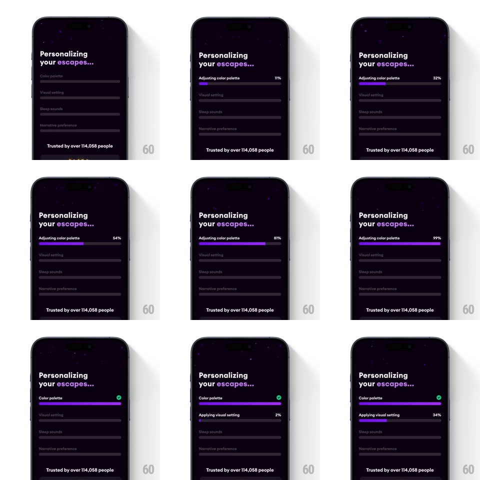

Media
Frame-by-frame

Rebuild this interaction 1:1: Loona's personalization loader - "Personalizing your escapes..." over a starry dark sky while sequential setup rows (color palette, visual setting, sleep sounds, narrative preference) fill purple progress bars with live percentages and green checkmarks.

Rebuild this interaction 1:1: Loona's personalization loader - "Personalizing your escapes..." over a starry dark sky while sequential setup rows (color palette, visual setting, sleep sounds, narrative preference) fill purple progress bars with live percentages and green checkmarks.
## Integration
Integration: stack-agnostic spec - springs given as stiffness/damping, timed motions as duration + curve; map every value to your framework and animation library of choice.
## Scene
Deep purple night sky with faint stars: bold headline "Personalizing your escapes..." (escapes in italic serif, lavender), a stack of four task rows each with a label left, percentage right, and a slim progress track beneath; footer line "Trusted by over 114,058 people".
## Motion spec
Pattern: sequential multi-step progress.
- Rows begin as dim gray placeholders (labels and tracks ~25% opacity).
- Activation: a row's label brightens and its purple fill sweeps the track (0 -> 100% over ~2.5s, ease-in-out with a slight ease-out tail) while its percentage counts up in sync.
- Completion: the bar pops full with a tiny glow flash, a green check circle fades/scales in at the row's right (spring ~420/20), the label turns white and renames to its done state ("Adjusting color palette" -> "Color palette").
- The next row activates 250ms after the previous checks - a clear sequential cascade, never parallel.
- Stars twinkle slowly throughout (opacity 0.3 <-> 0.8, randomized 2-4s).
## Calibration
- Only one bar fills at a time - the sequence is the story.
- The headline and footer never animate; the task stack owns all motion.
## Reduced motion
Bars fill linearly without glow; checks appear without spring.
## Don't miss
- The renaming on completion ("Adjusting..." -> done name) is a quiet but key detail.
- Percentages are right-aligned and monospaced-feeling - they don't jitter the layout as they count.